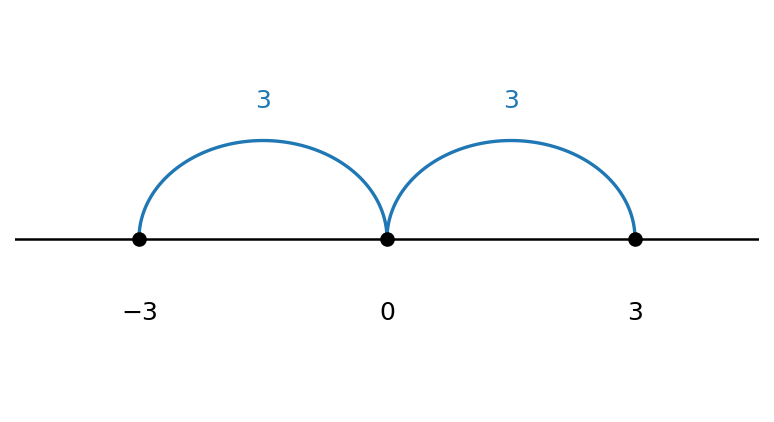
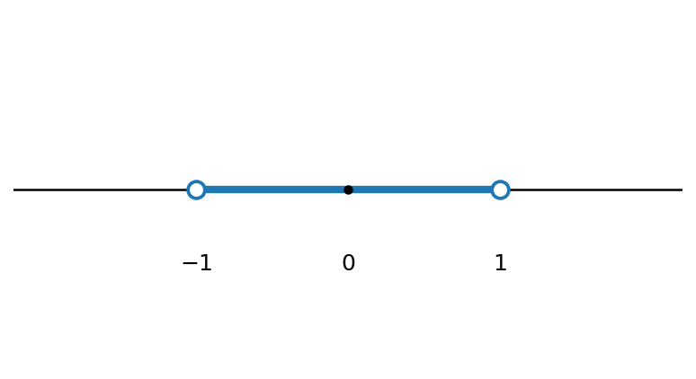
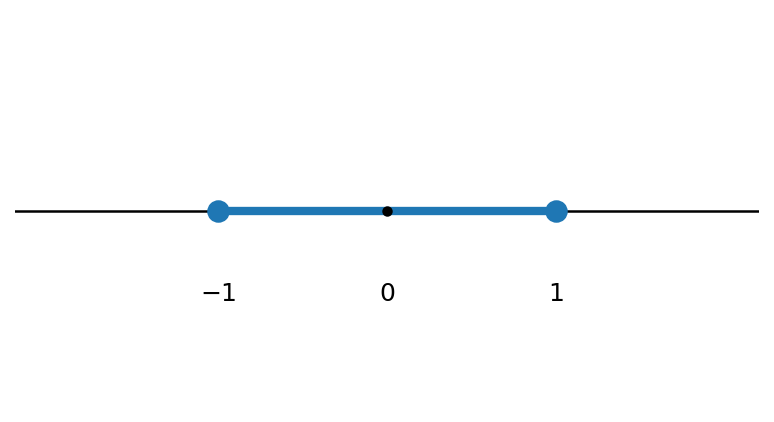
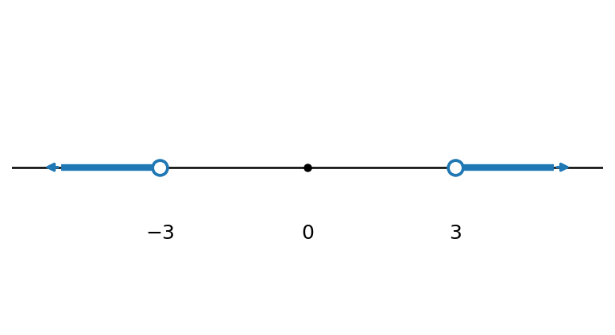
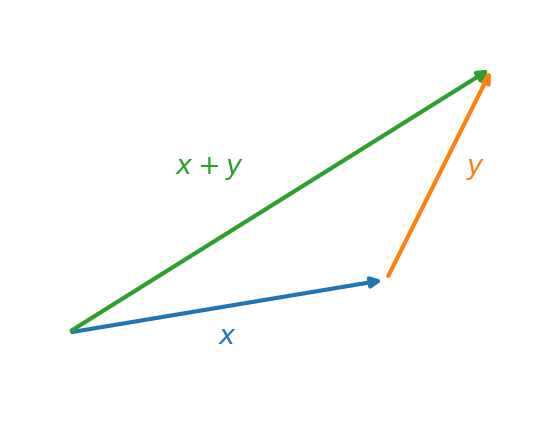
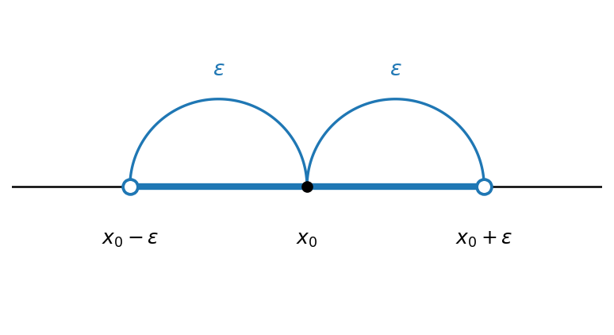

מושגי יסוד
מבוא
כל תופעה שנחקרת או מנותחת מנוסחת בסופו של דבר בעזרת שפה מתמטית. זו הסיבה שבגינה מתמטיקה מכונה לעיתים ״שפת המדעים״. המתמטיקאי הצרפתי אנרי פואנקרה ניסח זאת בציטוטו המפורסם: ״מתמטיקה היא האמנות של מתן שמות זהים לדברים שונים״. מה זה אומר? מדובר בתהליך שנקרא הפשטה: אנו לוקחים תופעה מסוימת, מתמקדים בתכונות שמעניינות אותנו (ורק בהן), מסמנים אותן בסימונים זהים — ״שמות זהים״ — ומנתחים אותן בעזרת אותן פעולות. הדוגמה הפשוטה ביותר לכך היא היכולת לספור דברים. כעת נציג את השפה ואת מושגי היסוד שישרתו אותנו בהמשך הקורס ובהמשך התואר.
השפה של המתמטיקה ומבוא קצר ללוגיקה
לפני שנעבור ללב הקורס, חשוב להתעכב על אחד הדברים המבלבלים סטודנטים חדשים במתמטיקה — השפה של המתמטיקה. למתמטיקה יש שפה משלה, הכוללת אוצר מילים וביטויים אופייניים: יהי, קיים, נניח, נניח בשלילה, לכן, מכאן נובע ש-, סתירה, הפרכה, מש״ל, הוכחה וכדומה. למעשה, ברגע שמבינים אותה היא פשוטה מאוד, שכן היא מבוססת על היגיון; אולם רוב הסטודנטים המתחילים תואר כמעט לא התנסו בה — פרט אולי לפסיכומטרי או להוכחות בגיאומטריה של המישור בבית הספר — ולכן היא מהווה קושי בתחילת הדרך.
בסעיף זה נבנה מעין שיחון של המונחים והביטויים השכיחים. אך לפני שנציג אותו, ננסה להסביר בקצרה כיצד עובדת החשיבה המתמטית. הדבר הראשון שחשוב להבין הוא שהמתמטיקה היא דדוקטיבית. מה פירוש הדבר? המתמטיקה אינה ממציאה דבר חדש — היא רק מסיקה האם טענה נכונה או אינה נכונה מתוך הנחות קיימות; ״הכול נובע מן הנתונים״. יש אפילו בדיחה ידועה על כך: ״במתמטיקה הכול טריוויאלי, שהרי הכול נובע מן הנתונים״. אפשר לחשוב על כך כעל משחק: נתון ״עולם״ ובו הנחות מסוימות, וכן כללים הקובעים מה מותר לעשות עם ההנחות הללו. בהינתן שאלה, מנסים להכריע אם התשובה היא ״נכון״, ״לא נכון״, או ״אין מספיק נתונים״.
דוגמה 1 נניח שכל הכלבים הם יונקים, ושחומי הוא כלב. אז הטענה ״חומי הוא יונק״ נכונה. לעומת זאת, נניח שלאיגור יש דוברמן; האם שמו של הדוברמן הוא חומי? כאן התשובה היא ״אין מספיק נתונים״.
התחום הפורמלי במתמטיקה, במדע ובפילוסופיה העוסק בהסקת מסקנות מהנחות ובבדיקת טענות על סמך הנחות נקרא לוגיקה (בעברית: תורת ההיגיון). זהו תחום מורכב ועמוק, שלא ניכנס אליו לעומק; אך הלוגיקה הבסיסית מופיעה בכל תחום במתמטיקה ובמדע, וחשוב להכירה כשפה. נציג אותה כאן באופן לא-פורמלי, בעזרת דוגמאות יומיומיות, ולצד זאת נציג את הסימונים הבסיסיים.
המושג הבסיסי ביותר בלוגיקה הוא הפסוק.
הגדרה 1 פסוק הוא משפט הצהרתי שאפשר לקבוע לגביו, באופן חד-משמעי, אם הוא אמת או שקר (אך לא שניהם בו-זמנית). ערך זה — אמת או שקר — נקרא ערך האמת של הפסוק. נהוג לסמן את הערך ״אמת״ באות \(T\) (מאנגלית, True) ואת הערך ״שקר״ באות \(F\) (False).
דוגמה 2
- ״\(2+2=4\)״ — פסוק שערך האמת שלו אמת.
- ״\(3 > 5\)״ — פסוק שערך האמת שלו שקר.
- ״חומי הוא יונק״ — פסוק (ערך האמת תלוי בעובדות).
- ״מהי השעה?״ — אינו פסוק: זוהי שאלה, ואי אפשר לקבוע לגביה אמת או שקר.
כשהתוכן אינו חשוב, או כשאנו רוצים לקצר, נסמן פסוקים באותיות לועזיות גדולות, כגון \(P, Q, \dots\).
לעיתים נתבונן בביטוי המכיל משתנה, שאינו פסוק בפני עצמו אלא הופך לפסוק רק לאחר שמציבים במקום המשתנה ערך מסוים.
הגדרה 2 ביטוי \(P(x)\) התלוי במשתנה \(x\), אשר בהצבת כל ערך קונקרטי \(a\) במקום \(x\) הופך לפסוק \(P(a)\) (אמת או שקר), נקרא פסוק פתוח (או תכונה). נאמר ש-\(a\) מקיים את \(P\) אם \(P(a)\) הוא פסוק אמת.
דוגמה 3 ניקח את \(P(x)\) להיות ״\(x > 5\)״. כל עוד \(x\) אינו ידוע, \(P(x)\) אינו פסוק; אך בהצבת ערך מתקבל פסוק: \(P(7)\) היא הטענה ״\(7 > 5\)״, שהיא אמת, ואילו \(P(3)\) היא ״\(3 > 5\)״, שהיא שקר. אם כן, \(7\) מקיים את \(P\) ואילו \(3\) אינו מקיים.
מפסוקים נתונים אנו מרכיבים פסוקים מורכבים יותר בעזרת קשרים לוגיים. נציג את החשובים שבהם בזה אחר זה, ולכל אחד נלווה דוגמאות. כל קשר מוגדר באופן מלא על ידי ערך האמת שהוא מקבל, בהתאם לערכי האמת של הפסוקים שעליהם הוא פועל.
שלילה. נתחיל בפעולה הפשוטה ביותר, הפועלת על פסוק יחיד.
הגדרה 3 השלילה של פסוק \(P\), המסומנת \(\neg P\) ונקראת ״לא \(P\)״, היא הפסוק שהוא אמת בדיוק כאשר \(P\) שקר (ושקר כאשר \(P\) אמת).
דוגמה 4
- אם \(P\) הוא ״\(5\) הוא מספר ראשוני״ (אמת), אז \(\neg P\) הוא ״\(5\) אינו מספר ראשוני״ (שקר).
- אם \(Q\) הוא ״\(2 > 3\)״ (שקר), אז \(\neg Q\) הוא ״\(2 \le 3\)״ (אמת).
וגם. כעת נעבור לקשרים הפועלים על שני פסוקים. הראשון הוא הוגם (קוניונקציה).
הגדרה 4 הקוניונקציה של \(P\) ו-\(Q\), המסומנת \(P \land Q\) ונקראת ״\(P\) וגם \(Q\)״, היא הפסוק שהוא אמת בדיוק כאשר שני הפסוקים אמת.
דוגמה 5
- ״\(2\) זוגי וגם \(2\) ראשוני״ — שני החלקים אמת, ולכן הפסוק כולו אמת.
- ״\(2\) זוגי וגם \(2 > 3\)״ — החלק השני שקר, ולכן הפסוק כולו שקר.
- בשפה היומיומית: ״ירד גשם וגם נשבה רוח״ אמת רק אם שני הדברים קרו.
או. הקשר הבא, האו (דיסיונקציה), הוא מקור נפוץ לבלבול, ולכן נתעכב עליו.
הגדרה 5 הדיסיונקציה של \(P\) ו-\(Q\), המסומנת \(P \lor Q\) ונקראת ״\(P\) או \(Q\)״, היא הפסוק שהוא אמת בדיוק כאשר לפחות אחד מהפסוקים אמת — כולל המקרה שבו שניהם אמת.
הבלבול נובע מכך שבשפה היומיומית ״או״ הוא לרוב מפריד: אחד מן השניים, אך לא שניהם (״תה או קפה?״). ה״או״ הלוגי, לעומת זאת, הוא מכליל — הוא אמת גם כששני החלקים מתקיימים. לכן, מבחינה לוגית, ״\(P\) או \(Q\)?״ היא שאלת כן/לא, שהתשובה עליה ״כן״ אם מתקיים לפחות אחד מהם.
דוגמה 6 ההבדל הזה הוא מקור לבדיחות:
- ״ילדה אשתך בן או בת?״ — ״כן.״
- בקופה: ״תשלם במזומן או באשראי?״ — ״כן.״
מבחינה לוגית התשובות נכונות לחלוטין: בכל אחד מן המקרים מתקיים לפחות אחד מן הצדדים, ולכן הפסוק ״\(P\) או \(Q\)״ אמת. אלא שבשפה היומיומית ציפינו ש״או״ ידרוש בחירה בין השתיים.
הפעולה המתאימה ל״או״ המפריד של השפה היומיומית נקראת או מפריד (״או בלעדי״; באנגלית XOR), ומסומנת \(P \oplus Q\). היא אמת בדיוק כאשר בדיוק אחד מן השניים אמת — ולא כששניהם אמת. ההבדל בין שתי הפעולות מתבטא רק בשורה הראשונה:
| \(P\) | \(Q\) | \(P \lor Q\) | \(P \oplus Q\) |
|---|---|---|---|
| \(T\) | \(T\) | \(T\) | \(F\) |
| \(T\) | \(F\) | \(T\) | \(T\) |
| \(F\) | \(T\) | \(T\) | \(T\) |
| \(F\) | \(F\) | \(F\) | \(F\) |
גרירה. הקשר הבא, הגרירה, הוא ככל הנראה המבלבל ביותר.
הגדרה 6 הגרירה \(P \to Q\), הנקראת ״אם \(P\) אז \(Q\)״, היא הפסוק שהוא שקר בדיוק במקרה אחד: כאשר \(P\) אמת ו-\(Q\) שקר. בכל מקרה אחר היא אמת. הפסוק \(P\) נקרא ההנחה, ו-\(Q\) נקרא המסקנה.
יש להדגיש: הגרירה אינה קשר של סיבה ותוצאה, אלא אמירה על ערכי אמת בלבד. שתי הדוגמאות הבאות ממחישות זאת.
דוגמה 7 הפתגם ״אין עשן בלי אש״ הוא בעצם הגרירה ״אם יש עשן, אז יש אש״ — כלומר הפסוק ׳יש עשן׳ גורר את הפסוק ׳יש אש׳. שימו לב לכיוון: מבחינת סיבה ותוצאה, האש היא הסיבה והעשן הוא התוצאה; אך הגרירה פועלת מן העשן (התוצאה) אל האש (הסיבה), שהרי מתוך תצפית בעשן אנו מסיקים שקיימת אש. הכיוון הלוגי הפוך, אם כן, לכיוון הסיבתי.
דוגמה 8 דוגמה מבלבלת אף יותר: הגרירה \[2 \neq 2 \;\to\; 5 = 5\] היא אמת! ההנחה ״\(2 \neq 2\)״ שקרית, ולכן — לפי ההגדרה — הגרירה כולה אמת, על אף שאין שום קשר תוכני בין שני הצדדים. זהו ביטוי לכלל ״מן השקר נובע הכול״: בכל פעם שההנחה \(P\) שקרית, \(P \to Q\) אמת באופן אוטומטי.
אפשר לבנות אינטואיציה למקרה זה דרך הבטחה: ״אם ירד גשם — אקח מטרייה״. ההבטחה מופרת רק אם ירד גשם (ההנחה אמת) ובכל זאת לא לקחתי מטרייה (המסקנה שקר); אם לא ירד גשם כלל, לא הפרתי דבר, ולכן ההבטחה נחשבת מקוימת — כלומר אמת.
שקילות. לבסוף, השקילות.
הגדרה 7 השקילות \(P \leftrightarrow Q\), הנקראת ״\(P\) אם ורק אם \(Q\)״, היא הפסוק שהוא אמת בדיוק כאשר ל-\(P\) ול-\(Q\) אותו ערך אמת (שניהם אמת, או שניהם שקר). היא שקולה לקיום שתי הגרירות יחד: \(P \to Q\) וגם \(Q \to P\).
דוגמה 9
- עבור מספר שלם \(n\): ״\(n\) זוגי״ אם ורק אם ״\(n+1\) אי-זוגי״ — לשני הפסוקים תמיד אותו ערך אמת, ולכן השקילות אמת.
- ״\(3 > 5 \leftrightarrow 10 < 0\)״ — שני הצדדים שקריים, ולכן השקילות אמת.
- ״\(2+2 = 4 \leftrightarrow 1 = 2\)״ — צד אחד אמת והשני שקר, ולכן השקילות שקר.
לסיכום, ערכי האמת של חמשת הקשרים מרוכזים בטבלת האמת הבאה:
| \(P\) | \(Q\) | \(\neg P\) | \(P \land Q\) | \(P \lor Q\) | \(P \to Q\) | \(P \leftrightarrow Q\) |
|---|---|---|---|---|---|---|
| \(T\) | \(T\) | \(F\) | \(T\) | \(T\) | \(T\) | \(T\) |
| \(T\) | \(F\) | \(F\) | \(F\) | \(T\) | \(F\) | \(F\) |
| \(F\) | \(T\) | \(T\) | \(F\) | \(T\) | \(T\) | \(F\) |
| \(F\) | \(F\) | \(T\) | \(F\) | \(F\) | \(T\) | \(T\) |
הערה על סימונים. את הגרירה ואת השקילות סימנו כאן בחצים \(\to\) ו-\(\leftrightarrow\). במקורות רבים נהוג לסמנם דווקא בחצים הכפולים, \(\implies\) ו-\(\iff\) (בהתאמה); מדובר באותם קשרים בדיוק, בסימון שונה.
קבוצות: איברים והכלה
אחד המושגים הבסיסיים ביותר במתמטיקה הוא המושג קבוצה. באופן אינטואיטיבי, קבוצה היא אוסף של איברים, וכל אוסף ״הגיוני״ ניתן לחשוב עליו כקבוצה. למשל, אפשר לדבר על קבוצת כל המרצים בקורס בחדו״א 1 למהנדסים, על קבוצת ראשי ממשלת ישראל שכיהנו עד 2026, על קבוצות של אותיות, על קבוצות של מספרים, וכן הלאה. ברוב הקורס נעסוק בקבוצות של אובייקטים מתמטיים, כמו מספרים.
נתחיל בדוגמה פשוטה. קבוצות נהוג לסמן באותיות לועזיות גדולות (או בסימנים מיוחדים, כשמדובר בקבוצות מוכרות, כפי שנראה בהמשך), ואת איברי הקבוצה ניתן לתאר בכמה דרכים. הדרך הפשוטה ביותר היא רישום האיברים בתוך סוגריים מסולסלים. נסמן ב-\(A\) את קבוצת שלוש האותיות הראשונות בא״ב האנגלי; הרישום המלא הוא \[.A=\{a,\,b,\,c\}\]
הקבוצה נקראת \(A\), ואיבריה הם האותיות \(a\), \(b\) ו-\(c\).
כדי לציין שאובייקט מסוים הוא איבר בקבוצה, משתמשים בסימן ההשתייכות \(\in\). הכתיב \(x \in X\) נקרא ״\(x\) שייך ל-\(X\)״, ופירושו ש-\(x\) הוא איבר של \(X\); הכתיב \(x \notin X\) פירושו ש-\(x\) אינו איבר של \(X\). כך, למשל, \(a \in A\) ואילו \(d \notin A\).
מה מאפיין קבוצה? אך ורק זהות איבריה. לפיכך, שתי קבוצות שוות זו לזו אם ורק אם הן מכילות בדיוק את אותם האיברים. בעזרת סימן ההשתייכות נוכל לנסח זאת באופן פורמלי.
הגדרה 8 שתי קבוצות \(A\) ו-\(B\) הן שוות, ונסמן \(A=B\), אם לכל אובייקט \(x\) מתקיים \[,x \in A \leftrightarrow x \in B\] כלומר, כל איבר של \(A\) הוא איבר של \(B\) ולהפך.
מהגדרה זו נובע שברישום של קבוצה אין חשיבות לסדר האיברים ואין חשיבות לחזרות. כך, למשל, שלוש הקבוצות הבאות שוות זו לזו: \[.\{a,a,b,c,c\}=\{a,b,c\}=\{b,c,a\}\]
לעומת זאת, נתבונן בקבוצה \(B=\{a,\,b,\,d\}\). הקבוצות \(A=\{a,\,b,\,c\}\) ו-\(B\) אינן שוות. כדי להראות זאת, די למצוא אובייקט יחיד שעבורו השקילות \(x \in A \leftrightarrow x \in B\) אינה מתקיימת — כלומר איבר ששייך לאחת הקבוצות אך לא לשנייה. ואכן, \(c \in A\) אך \(c \notin B\): האות \(c\) שייכת ל-\(A\) אך אינה שייכת ל-\(B\), ולכן השקילות נכשלת עבור \(x=c\), ודי בכך כדי להסיק ש-\(A \neq B\). כלומר, מספיק איבר מבדיל אחד — אין צורך לבדוק את כל האיברים. במקרה זה קיים גם איבר מבדיל שני, שכן \(d \in B\) אך \(d \notin A\), אך כאמור צד אחד מספיק; הצגנו את שניהם רק לשם ההמחשה.
כעת נפנה למושג ההכלה: מתי קבוצה אחת ״נמצאת בתוך״ קבוצה אחרת.
הגדרה 9 תהיינה \(A\) ו-\(B\) קבוצות. נאמר ש-\(B\) מוכלת ב-\(A\), או ש-\(B\) היא תת-קבוצה של \(A\), ונסמן \(B \subseteq A\), אם כל איבר של \(B\) הוא גם איבר של \(A\); כלומר, לכל \(x\) מתקיים \[.x \in B \to x \in A\]
דוגמה 10 נתבונן שוב בקבוצה \(A=\{a,\,b,\,c\}\). הקבוצה \(\{a,\,b\}\) היא תת-קבוצה של \(A\), כלומר \(\{a,\,b\} \subseteq A\), שכן כל איבר שלה שייך גם ל-\(A\): אכן \(a \in A\) וגם \(b \in A\).
חשוב להבחין בין שני הסימנים \(\in\) ו-\(\subseteq\), שכן ערבוב ביניהם הוא מקור נפוץ לבלבול. הסימן \(\in\) מקשר אובייקט (איבר) לקבוצה: \(x \in A\) פירושו ש-\(x\) הוא אחד מאיברי \(A\). לעומתו, הסימן \(\subseteq\) מקשר קבוצה לקבוצה: \(B \subseteq A\) פירושו שכל איברי \(B\) הם איברים של \(A\). כך, למשל, עבור \(A=\{a,\,b,\,c\}\):
- \(a \in A\) — נכון, שכן \(a\) הוא איבר של \(A\);
- \(\{a\} \subseteq A\) — נכון, שכן הקבוצה \(\{a\}\) מכילה איבר יחיד, \(a\), ששייך ל-\(A\);
- \(\{a\} \in A\) — לא נכון: איברי \(A\) הם האותיות \(a,b,c\), והקבוצה \(\{a\}\) אינה אחת מהן;
- \(a \subseteq A\) — חסר משמעות, שכן \(a\) אינו קבוצה (אלא איבר), ואין מובן ל״הכלה״ של איבר.
הקשר בין הכלה לשוויון נותן בידינו את שיטת ההוכחה החשובה ביותר לשוויון קבוצות.
טענה 1 שתי קבוצות \(A\) ו-\(B\) שוות אם ורק אם כל אחת מהן מוכלת בשנייה; כלומר, \(A=B\) אם ורק אם \(A \subseteq B\) וגם \(B \subseteq A\).
הטענה נובעת ישירות מהגדרת השוויון: התנאי \(x \in A \leftrightarrow x \in B\) שקול לכך ששתי הגרירות מתקיימות — \(x \in A \to x \in B\) (שהיא \(A \subseteq B\)) ו-\(x \in B \to x \in A\) (שהיא \(B \subseteq A\)). זוהי הדרך הסטנדרטית והנפוצה ביותר להוכיח שוויון בין קבוצות: מוכיחים בנפרד את שתי ההכלות, \(A \subseteq B\) ואז \(B \subseteq A\). שיטה זו שימושית במיוחד כאשר הקבוצות מוגדרות על ידי תכונה (בשיטת השומר) ולא על ידי רשימת איברים מפורשת — ובמקרים כאלה היא לרוב הדרך הטבעית ביותר.
נחזור לעניין תיאור איבריה של קבוצה. אף על פי שהסימון בעזרת סוגריים מסולסלים הוא פשוט וחד-משמעי, הוא אינו תמיד נוח, ולעיתים אף אינו מספיק. כל עוד באוסף יש מעט איברים אין בכך בעיה, אך מה נעשה אם במקום 3 איברים יש 100,000? כתיבת כולם עלולה להיות מייגעת למדי. הכלל הוא שסימון נועד להקל על ההבנה ועל הניתוח של המידע, לא לסרבל אותם; אם סימון מסרבל במקום לפשט — אין בו צורך. בעיה שנייה, חמורה אף יותר, מתעוררת כאשר בקבוצה יש אינסוף איברים — למשל אוסף כל המספרים הטבעיים \(0,1,2,\dots\). במקרה כזה הסימון שהצגנו אינו מספיק כלל, שכן לא ניתן לכתוב אינסוף איברים בתוך סוגריים מסולסלים. לכן נזדקק לדרכים נוספות לתיאור קבוצות.
מהן האפשרויות? כאשר ההקשר ברור, לעיתים אפשר שלא לרשום את כל האיברים אלא להסתפק בכמה מהם ובשלוש נקודות. למשל, את קבוצת המספרים הטבעיים, המוכרת לכולכם, נהוג לכתוב \(\mathbb{N}=\{0, 1, 2, \dots\}\); שלושת האיברים הראשונים \(0, 1, 2\) כבר מבהירים את התבנית, ושלוש הנקודות מציינות שהרשימה נמשכת באותו אופן. (בקבוצה זו נדון בהרחבה בסעיף על מערכות מספרים.) דרך שנייה, נוחה לעיתים יותר — בפרט להגדרת קבוצות ותת-קבוצות באמצעות תכונה או נוסחה — היא שיטת השומר (סימון בונה-קבוצות), שאותה נציג כעת.
הגדרה 10 תהי \(X\) קבוצה, ותהי \(P(x)\) תכונה — טענה שכל אובייקט \(x\) מקיים אותה או אינו מקיים אותה. הקבוצה \[\{x \in X \mid P(x)\}\] מוגדרת כקבוצת כל האיברים \(x\) שב-\(X\) המקיימים את התכונה \(P\). הקו האנכי \(\mid\), השומר, נקרא ״כך ש-״ (או ״שעבורם״), והוא מפריד בין שם האיבר לבין התנאי שעליו לקיים. כלומר, לכל אובייקט \(y\) מתקיים ש-\(y\) שייך לקבוצה אם ורק אם \(y \in X\) והתכונה \(P(y)\) מתקיימת. כאשר ה״עולם״ \(X\) ברור מן ההקשר, נהוג לקצר ולכתוב \(\{x \mid P(x)\}\).
דוגמה 11 הקבוצה \(\{n \in \mathbb{N} \mid n > 5\}\) היא קבוצת כל המספרים הטבעיים הגדולים מ-\(5\), כלומר \[.\{n \in \mathbb{N} \mid n > 5\} = \{6, 7, 8, \dots\}\] כך, \(7\) שייך לקבוצה (שכן \(7 \in \mathbb{N}\) וגם \(7 > 5\)), ואילו \(3\) אינו שייך לה (שכן \(3\) אינו גדול מ-\(5\)).
תוכן בהכנה — להשלמה.
פעולות על קבוצות: איחוד, חיתוך והפרש
תוכן בהכנה — להשלמה.
הקבוצה הריקה
תוכן בהכנה — להשלמה.
מערכות מספרים: \(\mathbb{N},\ \mathbb{Z},\ \mathbb{Q},\ \mathbb{R}\)
תוכן בהכנה — להשלמה.
אי-רציונליות; \(\sqrt{2}\) כדוגמה
הוכחות
טענה 2 \[.\sqrt{2} \notin \mathbb{Q}\]
הוכחה: נניח בשלילה כי \(\sqrt{2} \in \mathbb{Q}\).
הסכם נסכום מהגדרת המספרים הרציונליים.
לכן קיימים \(m,n \in \mathbb{Z}\), \(n \neq 0\) עבורם \[.\sqrt{2} = \frac{m}{n}\]
(מבלי הגבלת הכלליות נצמצם את השבר)
נעלה בריבוע את שני האגפים: \[.2 = \frac{m^2}{n^2}\]
נכפול ב-\(n^2\): \[2 \cdot n^2 = m^2 \quad (*)\]
האגף השמאלי שלם וזוגי.
לכן גם \(m^2\) זוגי, ולכן \(m\) זוגי.
לכן קיים \(k \in \mathbb{Z}\) עבורו: \[.m = 2 \cdot k\]
נציב חזרה ב-\((*)\): \[2 \cdot n^2 = (2 \cdot k)^2\] \[2 \cdot n^2 = 4k^2\] \[.n^2 = 2 \cdot k^2\]
לכן \(n^2\) זוגי ואז \(n\) זוגי.
קיבלנו כי \(m,n\) זוגיים, בסתירה לכך ש-\(\frac{m}{n}\) הוא שבר מצומצם.
ולכן הראנו: \(\sqrt{2} \notin \mathbb{Q}\).
תכונות הסדר על הממשיים
תוכן בהכנה — להשלמה.
קטעים
תוכן בהכנה — להשלמה.
ערך מוחלט
ערך מוחלט
הגדרה 11 לכל מספר \(x\) ממשי, הערך המוחלט של \(x\) מסומן ומוגדר ע”י: \[|x| = \begin{cases} x & : x \geq 0 \\ -x & : x < 0 \end{cases}\]
דוגמה 12 \[|5| = 5, \quad |-3| = 3\]
ערך מוחלט של \(x\) זה המרחק של \(x\) מ-\(0\), ולכן אין שלילי במרחק.
דוגמה 13 \[|-3| = |3| = 3\]
תרשים: ציר מספרים עם הנקודות \(-3\), \(0\), \(3\) וקשתות “מרחק 3” משני הצדדים.

לכן המרחק בין שני מספרים \(a,b \in R\) הוא: \(|a-b| = |b-a|\).
דוגמה 14 \[|x| = -2\] ל-\(x\) חיובי או אפס ולכן אין פתרון.
דוגמה 15 \[|x| < 1\] הקטע הפתוח: \(\{x \mid -1 < x < 1\} = (-1,1)\)
תרשים: ציר מספרים עם נקודות פתוחות ב-\(-1\) וב-\(1\), והקטע הפתוח ביניהן.

דוגמה 16 \[|x| \leq 1\] הקטע הסגור: \(\{x \mid -1 \leq x \leq 1\} = [-1,1]\)
תרשים: ציר מספרים עם נקודות סגורות ב-\(-1\) וב-\(1\), והקטע הסגור ביניהן.

דוגמה 17 \[|x| > 3\] \[\{x \mid x > 3 \cup x < -3\} = (3,\infty) \cup (-\infty,-3)\]
תרשים: ציר מספרים עם נקודות פתוחות ב-\(-3\) וב-\(3\), והקרניים החיצוניות מסומנות.

אי שוויון המשולש
תרשים: סקיצת משולש וקטורים — וקטור \(x\), וקטור \(y\) והווקטור \(x+y\), להמחשת אי-שוויון המשולש.

אורך צלע \(\geq\) סכום הצלעות האחרות.
לכל \(x,y \in R\) מתקיים: \[.|x+y| \leq |x| + |y|\]
דוגמה 18 \[x = 2, y = -1\] \[|x+y| < |x| + |y|\] \[|1| < |2| + |(-1)|\] \[1 < 2 + 1 = 3\]
סביבת-\(\varepsilon\) של נקודה
\(\varepsilon\)-סביבות
(נחוצה לתורת הגבולות)
אם \(\varepsilon > 0\), ואם \(x_0 \in R\), אז נגדיר את הסביבת \(\varepsilon\) של \(x_0\) להיות קבוצת כל המספרים שמרחקם מ-\(x_0\) קטן מ-\(\varepsilon\).
כלומר: \((x_0 - \varepsilon, x_0 + \varepsilon)\)
תרשים: ציר מספרים עם הנקודות \(x_0-\varepsilon\), \(x_0\), \(x_0+\varepsilon\) וקשתות באורך \(\varepsilon\) משני צדי \(x_0\).

דוגמה 19 סביבת \(\frac{1}{2}\) של \(2\) היא: \(\left(\frac{3}{2}, \frac{5}{2}\right)\).
אינדוקציה
עקרון האינדוקציה
שיטת הוכחה לטענות מהצורה:
לכל מספר טבעי \(n\), מתקיים _________.
דוגמה 20 לכל מספר \(n \in N\) מתקיים: \(2^n + n \leq 3^n\)
לכל מספר \(n \in N\) מתקיים: \(1 + 2 + 3 + \dots + n = \frac{n(n+1)}{2}\)
לכל מספר \(n \in N\) מתקיים: \(1^2 + 2^2 + \dots + n^2 = \frac{n(n+1)(2n+1)}{6}\)
לכל מספר \(n \in N\) מתקיים: \(24 \mid 2 \cdot 7^n + 3 \cdot 5^n - 5\)
(מתרגול ה-24)
שלבי האינדוקציה
במקום לבדוק את נכונות הטענה לכל \(n = 1,2,3,\dots\) נעשה כך:
בסיס האינדוקציה - נבדוק שהטענה נכונה עבור \(n=1\).
נניח כי הטענה נכונה עבור \(n\) כללי, ואז נראה כי הטענה נכונה עבור \(n+1\).
דוגמה 21 נוכיח באינדוקציה כי מתקיים: \(1^2 + 2^2 + \dots + n^2 = \frac{n(n+1)(2n+1)}{6}\) לכל \(n \in N\).
פתרון:
- נבדוק את בסיס האינדוקציה:
עבור \(n=1\) נקבל: \[1^2 \overset{?}{=} \frac{1 \cdot 2 \cdot 3}{6} \overset{\checkmark}{=} 1\]
- נניח כי מתקיים: \(1^2 + 2^2 + \dots + n^2 = \frac{n(n+1)(2n+1)}{6}\)
ונראה כי: \[1^2 + \dots + n^2 + (n+1)^2 = \frac{(n+1)(n+1+1)(2(n+1)+1)}{6}\] \[1^2 + \dots + n^2 + (n+1)^2 = \frac{(n+1)(n+2)(2n+3)}{6}\]
נעבוד על אגף שמאל: \[1^2 + \dots + n^2 + (n+1)^2 = \underbrace{\frac{n(n+1)(2n+1)}{6}}_{\text{הנחת האינדוקציה}} + (n+1)^2 =\] \[= \frac{(n+1)[n(2n+1) + 6(n+1)]}{6} = \frac{(n+1)[2n^2 + 7n + 6]}{6} = \frac{(n+1) \cdot [n+2][2n+3]}{6}\]